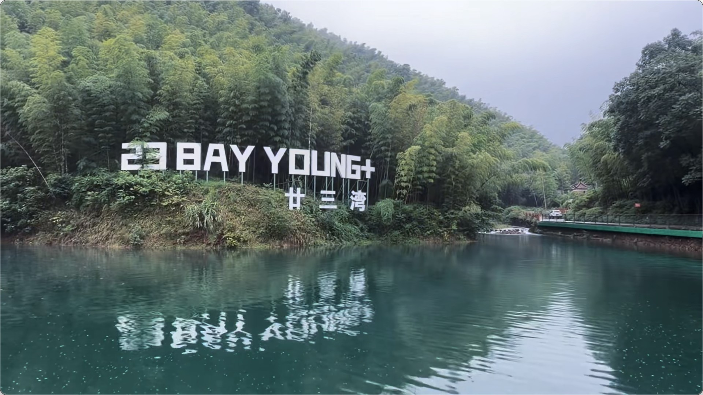
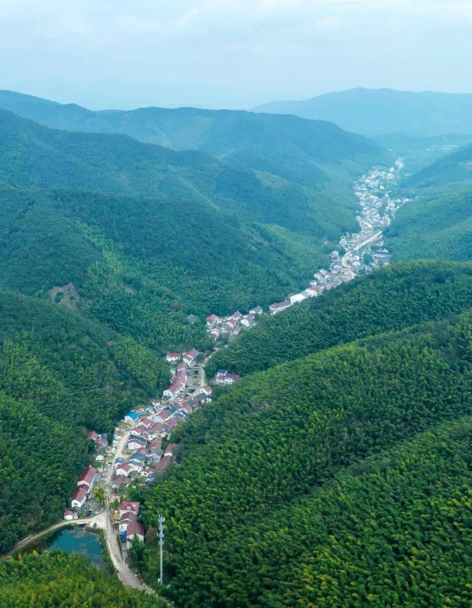
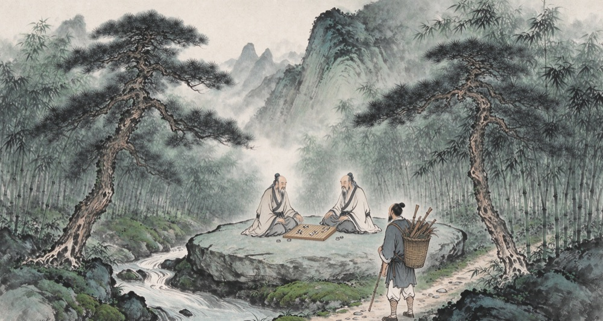
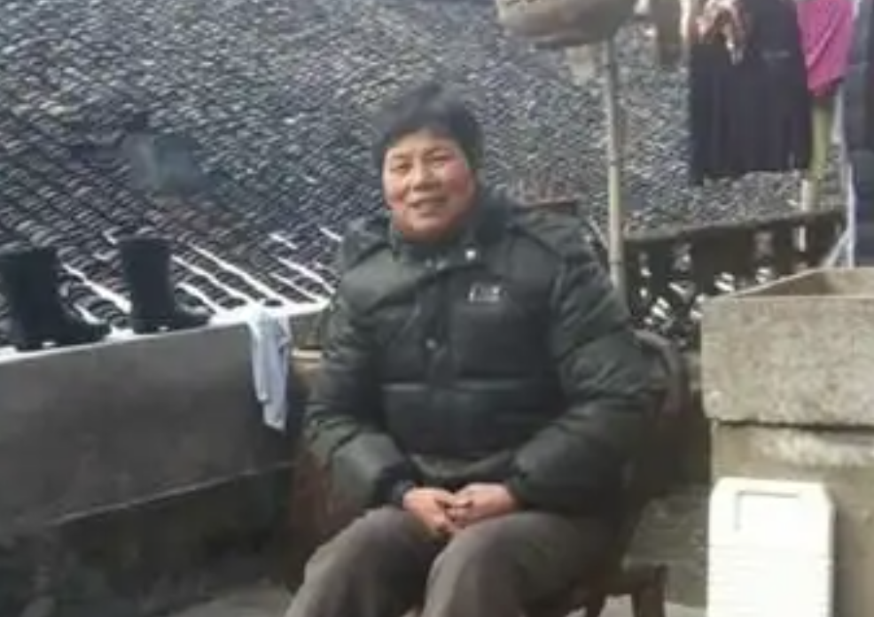
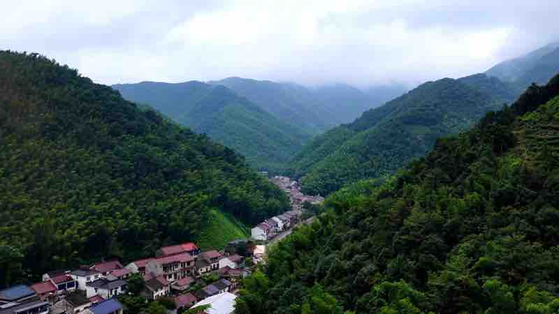
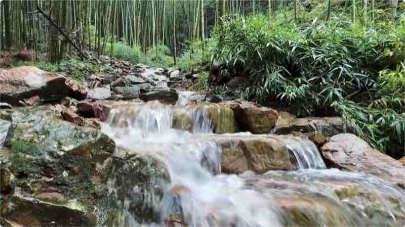

壹
历史演义
Historical Chronicle本编收历史相关的故事、寺观沿革与村庄发展史——阳羡贡茶如何成为唐代制度性贡茶、廿三湾古道缘起、青隐寺与赐福寺的兴废，以及邵东村由诸姓散居到并村成形的来龙去脉。
一、第一贡茶——阳羡茶的源头
唐代陆羽于廿三湾开植贡茶，阳羡茶自此定为制度性贡茶，卢仝一句"天子未尝阳羡茶"名动天下。 查看详情
二、廿三湾的传说
项羽败走翻越长岗岭、韩信以蚁字破敌，廿三湾得名与霸王潭、无梢竹的由来尽在其中。 查看详情三、青隐山与青隐寺传说
南唐李煜冠名青隐山，元僧无极建寺，历明清兴衰与太平天囯兵燹，佛缘甚广流传至今。 查看详情四、廿三湾赐福寺(祠福寺)沿革
山顶天官庙至康熙赐名，屡毁屡修，1996 年重修恢复路茶传统，三教齐融香火复旺。 查看详情
五、邵东村人口与村庄发展历史
明正德应氏北迁定居，诸姓散居，2001年东岭、邵坞两村合并为今日邵东村，纳入阳羡生态度假区。 查看详情贰
民间故事
Folk Stories本编收民间相传的传奇与异事——樵夫观棋归家已历一甲、观音求水井泉涌出、乾隆寻父夜奔青隐寺，以及独骨黄三、饭篮臂等传奇故事，以及当代女武松邵敖芬的真人真事。

一、仙人石与樵夫的故事
樵夫观棋归家已历一甲，天上一天人间六十年的棋盘石传说，至今引好奇者探究。 查看详情 配图待补二、赐福寺·观音求水
赐福寺（祠福寺）山顶开井得泉，观音有求必应佳话流传几百年，井水至今取之不绝。 查看详情 配图待补三、青隐寺·乾隆寻父
乾隆三下江南暗访寻父，其父出家青隐寺的传奇典故，为古寺平添几分神秘色彩。 查看详情 配图待补四、独骨黄三
双臂独骨的黄三单手挟驴、双手震退江湖客，终与虎角斗，成为当地力士传奇。 查看详情 配图待补五、饭篮臂
臂粗如饭篮的夏姓祖先，以一根黄铜扁担力退山匪、捉拿红眉毛太湖强盗，保一方平安。 查看详情
六、当代女武松·邵敖芬
1983 年邵敖芬只身打死一只 30 公斤金钱豹，乡人称"当代女武松"，真人真事曾刊登于《江南晚报》，远近闻名。 查看详情叁
风物小志
Local Features & Customs本编收东岭岕的山川物产与乡风习俗——冬暖夏凉的岕口、甘甜的山泉水、漫山毛竹与笋干，村民自建的东岭水库，以及丧葬、婚嫁等乡俗仪轨。

一、东岭岕地理与气候
东岭岕临苏浙交界、约 30 平方公里，岕口冬暖夏凉的独特小气候，是大自然造就的宜居环境。 查看详情